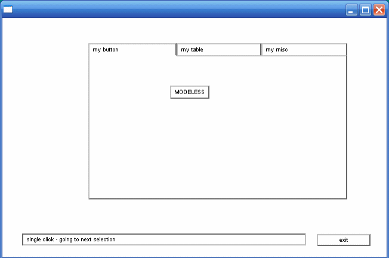
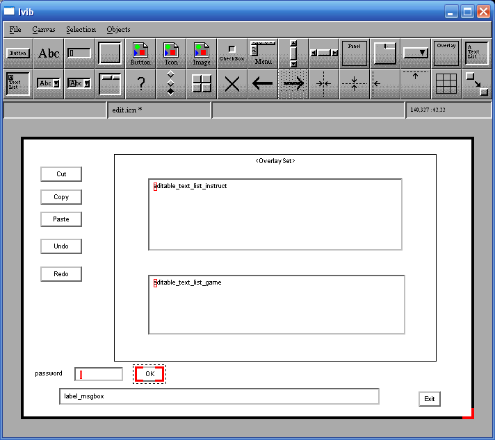
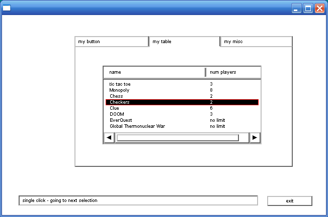
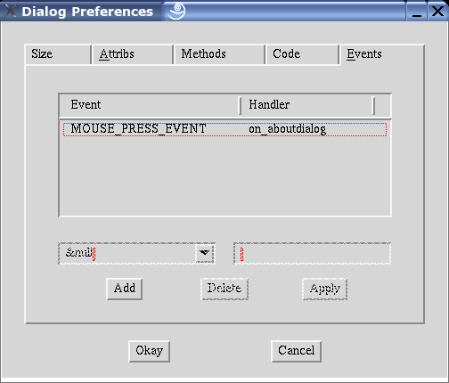

An IVIB Primer
Unicon Technical Report: 6c
2019-02-28
Abstract
Unicon's improved visual interface builder program IVIB offers many more types of widgets than its precursor, VIB. IVIB also supports colors and fonts, allowing the programmer a wider variety of appearances. This primer explains the rudiments of using IVIB Version 2.
Introduction
Most applications these days provide easy to use, graphical interfaces. For the Unicon programmer, several options are available to create such an interface. One option is to use the graphics facilities described in the book "Graphics Programming in Icon" [Gris98]. The Icon Graphics book includes chapters on writing user interfaces using the vidgets library and its interface builder, VIB. Unfortunately, these facilities are hard to customize, either with new widgets or with attributes such as colors or fonts. Another option for MS Windows programmers is to write an interface using MS Windows native facilities available from Icon; they are documented in Icon Project Document 271, but are very limited.
This report describes how to use Unicon's new GUI toolkit and its interface builder program, IVIB. This package was written by Robert Parlett, with minor improvements by the authors and other contributors. Compared with the Icon-based tools, Mr. Parlett's toolkit is elegant, feature-rich, extensible, and deep. Unless you are familiar with similar class libraries, IVIB and its GUI toolkit may seem daunting in its complexity. This report demystifies some typical uses of IVIB Version 2. We hope you come to enjoy it as much as we have. A great deal of additional documentation on these tools can be found in the book "Programming with Unicon" [Jeff01].
Part I A Simple IVIB Application
Hello, Ivib
Before we delve into a real application, let us create a rhetorical program with a single button that executes a procedure when we click on it. For the sake of tradition, let's suppose our procedure
p()
is as follows. Go ahead and type this procedure in using the ui program or your favorite text editor, and save it to a file named
p.icn
.
procedure p()
write("hello, world")
end
To start building our GUI, execute the Ivib program. Below its title bar it has a menu bar with File, Canvas, Selection, and Objects menus, and below that it has a tool bar that allows you to easily create many kinds of widget in the GUI library. Below the toolbar is the main Ivib drawing area, called the canvas.
The Button widget is the top leftmost widget in the toolbar. Go ahead and click on it; a button labeled "Button" appears in the upper left area of the canvas. You can drag it approximately to the center of your canvas area. To modify aspects of the widget's functionality or appearance, right click on it and select Dialog from the popup menu. The widget's setup dialog allows you to change all aspects of the widget. The top half of the dialog controls properties relevant to all widgets, such as position on screen, graphical attributes, and what variable name will hold the widget. The bottom half of the dialog controls properties specific to the particular type of widget being modified (in this case, a TextButton). TextButtons have a Label attribute that contains the text on the face of the button. Click in that text area and change "Button" to "Go!". Then click on the Okay button at the bottom of the dialog. Your resulting screen might look something like this:
Figure 1: go.icn
At this point, you have created a graphical interface with a button on it. When you save this as
go.icn
, Ivib will generate the Unicon source code for the graphical interface, with the Ivib representation of that graphical interface encoded as a strange looking comment at the end of the file. If you compile it, you can produce a working program, but it won't do anything when the Go! button is pressed.
Ivib and Event-driven Programming
Event-driven programming is writing code in terms of responses to events. You don't own the control flow, the GUI library does. The GUI library calls certain methods in response to each event; your options are to either stick your application code directly in those method bodies, or stick calls to your code in those method bodies.
Suppose our procedure
p()
given above is located in a file
p.icn
, which will hopefully be true by now. What we want to do is make the interface call
p()
whenever the button is pressed. An object (whose class is a subclass of Dialog in package gui) owns the control flow and processes user input. Each user activity (key press, mouse click) in the dialog is turned into an Event object and sent to the interface object being manipulated (the button, scrollbar, or other widget that was "clicked"). In Ivib, the object's dialog has an Events... tab that allows the programmer to associate a different handler method with code to handle each kind of event. To sum up: an interface has a corresponding Dialog class. For each widget
foo
you can optionally ask for a class variable
foo
that holds the actual widget object reference, and can write methods that are called when an event occurs on that widget.
In order for our button to call our procedure
p()
, we need to find out (or assign) the button's variable name. To do this, select the button, right click on it, and open its Dialog. The Name tab contains a
Name
field that determines the variable name for this widget. Change the name from
text_button_1
to
go
. Your dialog should look something like this:
| | Figure 2: TextButton Setup Name Tab
Click Okay to exit the dialog. Save the ivib session (File...SaveAs) in file go.icn.
At this point, you can compile go.icn as a standalone program that does nothing (unicon go). But it might be more interesting to tell the dialog what code to execute (namely, a call to the procedure
p()
mentioned earlier) when the "go" button is clicked. Go over to the Events tab, click on Add, and associate a method
on_go()
with
ACTION_EVENT
by clicking the Apply button.
| | Figure 3: TextButton Setup Event Tab
Click OK, and then save your file. At this point if you go into file
go.icn
and look at the code, the dialog has an empty method
method on_go(ev)
end
into which we can insert a call to
p()
using the ui IDE, or emacs or another text editor:
method on_go(ev)
p()
end
Save
go.icn
with this call to
p()
added, and then compile
go.icn
and
p.icn
together (
unicon go p
), and run it (
./go
). If successful, this application will run as described and write
"Hello, world"
to standard output when you click the button.
Warning! Editing your file with Ivib and a text editor at the same time makes it easy for you to overwrite work done in one tool when you save in another tool. The safest thing is to Quit Ivib when you are editing code, and quit your editor when you do an Ivib session. In the future we will make Ivib smarter about trying not to lose your work, and probably integrate it into an IDE so the text editor and Ivib sessions always know when to switch back and forth.
A Simple IVIB Application
For a more realistic example, we are going to create a simple application that will demonstrate the use of Buttons, Text List boxes, Menu Bars, Labels, multiple screens, File Input/Output, and error handling. Our application will contain a main screen with a Menu Bar and a Button. A File Selection Dialog box listing all the files in a directory will be displayed when the button is pressed. The Menu Bar will have options to Exit, display the About Box, and display a Help File.
This dazzling example is given in glorious click-by-click detail in order to familiarize you with IVIB and to teach you many of its capabilities by osmosis. All you should have to do is follow the instructions. Hopefully you will feel recklessly capable of writing similar applications on your own afterwards.
The Main Screen
First, create a directory where you can save all the files created for this application. Change into this directory, and launch Ivib (if Ivib is already running, you can click on the File menu's New item). You will see a blank canvas. We are now going to create a Menu Bar. In particular, we will have a File menu that pulls down to an Exit command and a Help menu that pulls down to an About box and a Help command.
Menu Bar
Add a Menu Bar by clicking on the Menu component from the Ivib Menu. A Menu Bar with an Edit me item will be added to the canvas. (Although Menu Bars have an associated variable name just like you saw in the Button example, you generally won't have to edit or use the name of a Menu Bar, since event handling code is not attached to Menu Bars, but instead to the menu objects placed inside those menu bars.)
Right click on the Menu Bar and select the dialog option. The MenuBar setup in the bottom box of the dialog will look like this:
|
|
-----------Edit me
| |
| |
|
Add the File menu
. Select
Edit me
, hit the edit button, and change the
Label
field to File. Click Okay. The tree will now look something like this:
|
|
-----------File
| |<-------------------------------------click here and Add label
|
Add the Exit command
. Highlight the branch by clicking in the position shown above. The Add label button will become available; click on it. A new branch labeled Edit me will be added to the branch. Edit this branch by clicking on the Edit button, change the Label field to say Exit, and switch to the Code tab. Change the object name to exit and then click the Event handler checkbox to create an
on_exit
handler method. Before you click OK the screen should look like:
| | Figure 4: TextMenuItem Setup Code Tab
Press Okay.
The tree will now look something like this:
|
|
-----------File
| |
| |-------------Exit(Txt)
| |
| <-----------------------------------------click here to add a menu item
Add the Help menu from the trunk of the tree. Highlight the branch by clicking in the position shown above. The Add Menu button will become available; click on it. A new branch labeled Edit me will be added to the tree. Edit this branch by clicking on the Edit button, change the Label field to say Help, and click Okay. The tree will now look something like this:
|
|
-----------File
| |
| |-------------Exit(Txt)|
| |
|
|---------Help
| |<-----------------------------------------click here to add a menu label
|
Add the About command
. Highlight the branch by clicking in the position shown above. The Add label button will become available; click on it. A new branch labeled
Edit me
will be added to the branch. Edit this branch by clicking on the Edit button, change the Label to
About...
and select the Code tab. Change the object name to about and then click the event handler to create an
on_about
handler method. Click Okay. The tree should now look something like this:
|
|
-----------File
| |
| |-------------Exit(Txt)
| |
|
|---------Help
| |
| |------------About
| |<-----------------------------------------click here, Add a label
|
Add the Help command
. Highlight the branch by clicking in the position shown above. The Add label button will become available; click on it. A new branch labeled Edit me will be added to the branch. Edit this branch by clicking on the Edit button, change the label to Help, and switch to the Code tab. Change the object name to help, and then click the Event handler checkbox to create an
on_help
event handler method. Click Okay. The tree will now look something like this:
|
-----------File
| |
| |-------------Exit(Txt)
| |
|
|---------Help
| |
| |------------About(Txt)
| |
| |------------Help(txt)
|
Hit Okay.
Buttons and Labels
Add a Button to the canvas , by clicking on the Button Component from the Ivib Menu Bar. Move the Button to somewhere near the left side of the canvas. Right click on the Button and select the dialog option. Change the label to say List Files, then select the Name tab. Change the name to ListBtn and then select the Events tab. Click on Add to create an on_ListBtn handler method, then click on Apply, and then click Okay.
Add a Message Box Label to the canvas by clicking on the Label component (designated "Abc") on the Ivib menu bar. Move the label to the bottom of the canvas. Resize the width to almost the size of the canvas and resize the height to about the same height as the button.
Right click on the Message Box and select the dialog option. Change the label to be empty, then click on the Name tab. Change the name to MsgBox, then click on the Other tab. Click on the Class variable radio button and the Draw Border checkbox so that there will be a border around our message box.
Select the Attribs Tab . Click Add and replace the Edit and me to fg and red respectively. This will change the foreground color to red.
Attrib Value
fg red
Click the Apply button to save the attribute. Press the Add button and replace the Edit and me with the values below. This will change the font attributes.
Attrib Value
font serif,18,bold
Hit the Apply button to save the changes. Hit Okay.
Enter the canvas attributes . Select the Canvas menu option Dialog prefs...
On the Attribs tab change the background from pale gray to yellowish white by selecting Add and changing the fields as follows:
Attrib Value
bg yellowish white
Hit the Apply button to save the changes
On the
Methods
tab, leave the
Generate main() procedure
button on so the box is checked. We want to put our main procedure in this file.
On the Code tab, change the Name field to maindialog.
Name maindialog
Hit Okay.
From Ivib, go to the File menu and save the file.
File->Save as: main.icn
Make sure you save them in the directory you made for this application
The About Box
We want to create a small canvas for our About box. The About box will contain one Text List containing application information. From Ivib, go to the File menu and select New and a blank canvas will appear. Resize the canvas by dragging the bottom right corner so it is about 3/4 the original size.
Add a Text List Box by clicking on the Text List component on the Ivib Menu Bar (this is the one in the upper right corner). Move it to the center, then right click on it to get the dialog selection. Under the Name tab, change its name to AboutTxtLst, then select the Other tab and click on the Class variable radio button. Hit Okay.
Add the canvas attributes . Select the Dialog prefs... item from the Canvas menu.
On the Attribs tab, click Add. A pair of text input boxes will appear for the attribute you want added; the attribute name field says "Edit" and the attribute value says "me". Replace the "Edit" with attribute name "label" and replace the attribute value "me" with a the value "About Ivib Primer". Click Apply.
On the
Methods
tab,
un
-click the
Generate main() procedure
button so the button is not down. We do not want a main procedure in this file.
On the Code tab, change the name to aboutdialog. Finally, on the Events tab, click Add and change the event to MOUSE_PRESS_EVENT and change the method name to on_aboutdialog (this method will quit the dialog). Click Apply. The screen should look like:
| | Figure 5: Dialog Preferences Events Tab
Click Okay.
From Ivib, go to the File menu and save the file with the name about.icn.
File->Save as: about.icn
Make sure you save it in the directory you made for this application.
The Help Screen
We want to create another small canvas for the Help information. This canvas will contain a Text List, a Cancel Button and a Label for messages. From Ivib, go to the File menu and select New and a blank canvas will appear. Resize the canvas by dragging the bottom right corner so it is about 3/4 the original size.
Add a Text List Box to this canvas by clicking the Text List component from the Ivib Menu Bar. Move it to the center and then right click on it to get the dialog attributes. Select the Name tab, and change the name to HelpTxtLst. Select the Other tab, and click on the Class variable radio button. Click Okay.
Add a Button to the canvas, by clicking on the Button Component from the Ivib Menu Bar. Move the Button to somewhere near the bottom of the canvas below the text box.
Right click on the Button and select the dialog option. Change the Label to Close, and select the Name tab. Change the name to CloseBtn. On the Events tab, click Add to create an on_CloseBtn() handler method. Click Apply, and then Okay.
Add a Message Box to the canvas by clicking on the Label component (Abc) on the Ivib menu bar. Move the label to the bottom of the canvas and resize it to be almost the length of the canvas.
Right click on the Label and select the dialog option. Change the Label field to be empty.
On the Name tab, change the name to MsgBox. On the Other tab, select the Class variable radio button. Click the Draw Border check box so that there will be a border. Click Okay.
Add the canvas attributes
. Select the Ivib Canvas menu's
Dialog prefs...
item. On the
Attribs
tab, Press Add to add an attribute. Change the attribute name from
Edit
to
label
and change the value
me
to
Ivib Primer Help
. On the
Methods
tab,
un
-click the
Generate main() procedure
button so the box is not checked. We do not want a
main()
procedure in this file.
On the Code tab, change the name to helpdialog. Click Okay.
From Ivib, go to the File menu and save the file.
File->Save as: help.icn
Make sure you save the file in the directory you made for this application.
You can exit out of Ivib now with the File menu's Quit item.
Adding the code
The code is now done for the GUI components. It is in the files main.icn, about.icn, and help.icn.
If you look at the file main.icn you will notice Ivib created a class called maindialog and various methods that are associated with the components we added. For example, method on_about() will be the method used when you click on the about menu item on the menu bar. Method init_dialog() is the first method called when the class is created. It is a good place to initialize variables. It is our job to write the code for these methods.
If any of the components are not spelled correctly, correct them using Ivib to keep the program code consistent with the graphics. However, when you change the names using Ivib, Ivib will add your new names, but not delete the old names. You may want to search the file for any references to the old names and remove all methods and references to the old names. If you do not remove the old names, your code will still work, but you will have unused methods and objects cluttering up the file. Also, remember Unicon is case sensitive. All references to the objects must be the same case.
Main Dialog Class . Edit the file main.icn using your favorite editor. This file contains the main procedure, which starts the application by displaying the main screen. Some of the methods in the file main.icn are shown below:
import gui
$include "guih.icn"
#
# maindialog is the class created by Ivib in the file main.icn
#
class maindialog : Dialog(MsgBox,........)
...
method on_ListBtn(ev)
end
method on_about(ev)
end
method on_exit(ev)
end
method on_help(ev)
end
...
end # dialog class
Find the main() procedure and change it if needed so it looks as shown below. This will cause the main screen to be displayed when the program starts up.
procedure main()
local d
d := maindialog()
d.show_modal()
end
Add code so the About Canvas is displayed when the About Menu item is selected. Add the following code to on_about():
method on_about(ev)
aboutdialog().show_modal()
end
Add code so the Help Canvas is displayed when the Help Menu item is selected. Add the following code to on_help():
method on_help(ev)
helpdialog().show_modal()
end
We also need to add code to terminate the application when the Exit menu item is selected. Add the dispose() function to on_exit().
method on_exit(ev)
dispose()
end
Save this file as main.icn. Make sure you save it in the directory you made for this application.
Makefile
The following instructions mainly apply to Linux/UNIX users. An ASCII file called a makefile (and often named makefile or Makefile) is written to compile and link all our code together using the
make
program. On Windows, if you obtain a version of the make program such as
make.exe
or
nmake.exe
, you can follow these instructions; in the makefile the executable (main) may need to be modified to say
main.exe
.
Create another file named makefile and enter the following. Be careful to follow make's syntax by beginning the unicon command lines with tab characters; some text editors (such as "edit") convert these to spaces on you, which may cause the make (or nmake) program to fail. For example, if you just copy and paste these lines from your web browser, you will not have tab characters pasted where they need to be; sorry! Notepad, or better yet a real programmer's editor, will preserve your tab characters.
#
# makefile
#
CFLAGS=-c
main: main.u about.u help.u
unicon -G -o main main.u about.u help.u
about.u: about.icn
unicon $(CFLAGS) about
help.u: help.icn
unicon $(CFLAGS) help
main.u: main.icn
unicon $(CFLAGS) main
Make sure you save it in the directory you made for this application At the shell/command-line prompt enter:
...% make
If everything went well, there will not be any errors at this point.
Note: if no make or nmake is available you can enter at the shell/command prompt:
...% unicon -G main.icn about.icn help.icn
Running the Program
At the shell/command prompt enter:
...% main
(On Linux if the current directory is not on your PATH you can say ./main)
When successful, the main screen will be displayed. You should be able to hit the menu items and view the help and about dialogs.
The About Box . Edit the file about.icn using your favorite editor. Some of the methods in the file about.icn are shown below
#
# aboutdialog is the class created by Ivib in the file about.icn
#
class aboutdialog : Dialog(AboutTxtLst)
...
method init_dialog()
end
method on_aboutdialog(ev)
end
...
end # aboutdialog
We need to fill the Text List with the About information. We could actually have done this from inside Ivib, but just for fun let's add code to
init_dialog()
so the Text List is filled when the canvas is displayed. Edit about.icn and add the following code to the
init_dialog()
and
on_aboutdialog()
methods.
method init_dialog()
local l
l := [
"This is an example application",
"To demonstrate an About Box",
"Also, how to show another form",
"Plus: using Makefiles with",
"Ivib"
]
AboutTxtLst.set_contents(l)
end
method on_aboutdialog(ev)
dispose()
end
The Help Screen . Edit the file help.icn using your favorite editor. Some of the methods in the file help.icn are shown below.
#
# helpdialog is the class created by Ivib in the file help.icn
#
class helpdialog : Dialog(HelpTxtLst, MsgBox)
...
method init_dialog()
end
method on_CloseBtn(ev)
end
...
end # helpdialog class
The help screen will read in a text file and display it in the text list we created. We'll add code to the method init_dialog() to open the help file and display it. Edit the file help.icn and add the following code to the method init_dialog():
method init_dialog()
local l, helpfile, fd
helpfile := "help.txt"
if fd := open(helpfile) then {
MsgBox.set_label("File " || helpfile || " ")
l := [] # create an empty list
while put(l, read(fd)) # read lines, put in list
close(fd)
HelpTxtLst.set_contents(l)
}
else
MsgBox.set_label("Cannot open help file: " || helpfile)
end
We also need to add code to terminate the application when the Cancel Button is clicked. Add a call to the dispose() function to on_CloseBtn().
method on_CloseBtn(ev)
dispose()
end
You will also need to create a text file named help.txt with any information you find helpful.
The Main Screen . The main dialog will demonstrate the use of file dialog box. It will open a file dialog when the List Button is pressed and display the selected file in a message box. First we need to link in the FileDialog class from the Unicon class library. Add the link statement before the maindialog class declaration as follows:
import gui
$include "guih.icn"
link filedialog # this the line you add
Add the following code to the
on_ListBtn()
method. The file dialog will be displayed when the List button is pressed and the selected file will be displayed in the MsgBox.
method on_ListBtn(ev)
local s, fd
fd := FileDialog()
fd.set_attribs("label=Select file demonstration")
fd.show_modal(self)
s := fd.get_result() | fail
if /s | s == "" | s[-1] == "\\" then {
MsgBox.set_label("Select a file")
return
}
MsgBox.set_label("File : " || s || " was selected ")
end
The application is now complete. Use the makefile or Unicon command to compile and link the program and run the application as described in the Makefile section above. Now you can go back and add labels, or resize components as needed.
Part II: Another Simple IVIB Application
The following example demonstrates how to create a simple application that uses modeless dialogs, edit dialog features, tab sets, and overlays. The application will contain a main screen with a table, overlay and tab set. The main screen will call an edit dialog that will have cut, copy, paste, undo, and redo features. This example will illustrate:
- Modeless Dialogs
- Tab Sets, Overlays
- Capturing Table events double clicks, right clicks, column clicks
- Copy, Cut, Paste from clipboard
- Using buttons and keeping selected regions for copy, cut, paste
- Single Undo/Redo instead of default compound undo/redo
- Tab Jumps to components
Modeless Dialogs
We are going to create a main dialog that contains a table of games. After you select one of the games from the table, a modeless dialog will be displayed. First, create a directory where you can save all the files created for this application. Change into this directory, and launch Ivib. You will see a blank canvas.
Enter the canvas attributes. Either right click on the Canvas for Dialog or go to the file menu option Canvas->Dialog prefs.
On the Code tab, enter:
Name dialogmain
On the
Methods
tab, leave the
Generate main() procedure
checkbox ON so the box is checked. We want to put our
main()
procedure in this file. Leave all the other checkboxes on on the Methods Tab checked also.
On the Attribs tab, Hit Add and replace Edit me with:
Attrib
Value
font
sans,12
Hit Apply . This will set the default font to sans 12 for every component in this dialog.
On the Events tab, hit the Add Button.
Under Event: Hit scroll down to CLOSE_BUTTON_EVENT. Under Handler enter:
on_dialogmain
. We will use this method to capture the Windows X (close) event at the top right of the Dialog. Hit
Apply
.
Hit Okay to close Dialog Prefs.
Add a Button to the canvas , by clicking on the Button Component from the Ivib Menu Bar. Move the Button to somewhere around the left side of the canvas. Note: you can resize the canvas or the button by dragging the right bottom corner to make it larger/smaller.
Right Click on the Button to add some attributes as follows:
| On the General tab enter: | Label Modeless
| On the Other tab: | Check the Class variable checkbox
| On the Name tab: | Name text_button_modeless
| On the Events tab: | Hit the Add Button
Under
Event
: Scroll down to
BUTTON_RELEASE_EVENT
Under
Handler
enter: (it may be automatically added)
on_text_button_modeless
Hit Apply .
This will create a method
on_text_button_modeless()
that will be invoked by a
BUTTON_RELEASE_EVENT
.
Hit Okay.
You may need to resize the button so the text will fit.
Add an Exit Button by clicking on the Button icon on the Tool Bar. Right Click on the Button to add some attributes as follows:
On the General tab, enter: Label Exit
On the Name tab, enter: Name text_button_exit
On the Other tab, check the: Class variable checkbox
On the Events Tab: Hit the Add Button
Under Event: Scroll down to
BUTTON_RELEASE_EVENT
| Under Handler enter: (it may be automatically added) |
on_text_button_exit
| Hit Apply | Hit Okay
Move the exit button to the bottom right side of the dialog as shown in Figure 6 of main.icn below:

Figure 6: main.icn my button Tab
Add a Message Box Label to the canvas by clicking on the Label component (Abc) on the Ivib menu bar. Move the label to the bottom of the canvas and resize it to be almost the width of the canvas. Refer to the Figure 6. The message label is the long rectangle at the bottom of main.icn. Right Click on the Label to add some attributes as follows:
| On the Other tab, check the: | Class variable checkbox
Click the Draw Border check box so that there IS a border.
| On the Name tab enter: | Name label_msgbox
| On General Tab enter: | Label : (make it blank - this label will be our message box) Hit Okay
From the Menu, Slect File->Save As and enter main.icn
File->Save as: main.icn
Make sure you save them in the directory you made for this application.
Create an Edit Dialog by going to the Ivib menu to File->New. A blank canvas will appear.
Enter the canvas attributes . Either right click on the Canvas for Dialog or go to the file menu option: Canvas->Dialog prefs.
| On the Code tab enter: | Name dialogedit
On the
Methods
tab,
un
-check the
Generate main() procedure
checkbox, so the checkbox is NOT checked. We DO NOT want to put a main procedure in this file.
On the Attribs tab, hit Add and replace Edit me with:
Attrib Value
label Edit dialog Hit Apply
font sans,12 Hit Apply
This will add a title to the top of the canvas and change the default font to sans. You can also add different background and foreground colors by using the attributes bg and fg.
| On the
Events
Tab : | Hit Add and scroll down to
CLOSE_BUTTON_EVENT
. Enter on_dialogedit for the Event Handler and hit Apply. We will use this method to capture the Windows X (close) Event at the top right of the Dialog. Note Ivib may have added another event handler. Please delete it. The CLOSE_BUTTON_EVENT handled by the on_dialogedit method should be the only entry. Hit Okay to close Dialog Prefs.
Add an Exit Button by clicking on the Button icon on the Tool Bar. Right Click on the Button to add some attributes as follows:
On the General tab enter:
Label Exit
On the Name tab enter:
Name text_button_exit
On the Other tab check the:
Class variable checkbox
| On the
Events
Tab, hit the Add Button. | Under Event: Scroll down to
BUTTON_RELEASE_EVENT
| Under Handler enter: |
on_text_button_exit
(it may be automatically added)
| Hit Apply . | Hit Okay
You may need to resize the button so the text will fit. Move the Exit button to bottom right corner as shown in Figure 7 of edit.icn below:

Figure 7: edit.icn
Add a Message Box Label to the canvas by clicking on the Label component (Abc) on the Ivib menu bar. Move the label to the bottom of the canvas and resize it to be almost the width of the canvas. Refer to Figure 7 of edit.icn. The message label is the long rectangle at the bottom of figure 7. Right click on the Label to add some attributes as follows:
| On the Other tab check the: | Class variable checkbox
Click the Draw Border check box so that there is a border.
| On the Name tab enter: | Name label_msgbox
| On General tab enter: | Label : (make it blank - this label will be our message box) | Hit Okay
From Ivib, go to the File menu and execute this command:
File->Save as: edit.icn
Make sure you save them in the directory you made for this application and close Ivib.
- Using an editor, open up main.icn
Caution!
Because you are saving files using Ivib and your editor, make sure that you save your file using the text editor before changing the graphics using Ivib. Also, make sure that you refresh the buffer (get the the latest) in your text editor after you change the graphics using Ivib. If you are nervous about writing over your changes you can make a backup copy to see how this works. Using the Gnu Emacs editor is a good idea, since it reminds you to refresh the buffer if Ivib has changed anything. Also, if you renamed any variables, the old names and their methods may still be there. Note: all variables are case sensitive so CancelBtn is not the same as cancelbtn. For example, if you forgot to uncheck
generate main procedure
, the main procedure will still remain. You will need to manually remove the main procedure and uncheck it in Ivib.
Edit main.icn and add the following code to the on_text_button_modeless method:
method on_text_button_modeless(ev)
dedit := dialogedit()
dedit.show_modeless() # show edit dialog
dispatcher.message_loop(dialogmain())
end
The third line
dispatcher.message_loop(dialogmain())
makes the modal dialogmain the parent of the modeless dialogedit. When using modeless dialogs, at least one dialog must be modal. In this case, it is the main dialog. You only need to add this line once. If you call a modeless dialog from dedit, the dialogedit, you will not need this line.
Also, add
dispose()
to the
on_text_button_exit()
method to close the dialog.
method on_text_button_exit(ev)
dispose()
end
Add the following code to on_dialogmain so the dialog will close for the X event
method on_dialogmain(ev)
if \ev.param = -11 then #windows x box
on_text_button_exit(ev)
end
Save main.icn.
Edit edit.icn
and add the following code to
on_text_button_exit()
to close the dialog.
method on_text_button_exit(ev)
dispose()
end
Also add the following code to on_dialogedit.
method on_dialogedit(ev)
if \ev.param = -11 then #windows x box
on_text_button_exit(ev)
end
Save edit.icn.
Compile the program:
> unicon -o demo -G main.icn edit.icn
Run the program
> demo
When the main dialog comes up, you can click on the 'Modeless' button and a new edit dialog will appear. Notice you can go back and forth from main dialog to edit dialogs. Every time you click, a new dialog will be created. This is different from the show_modal dialogs where the focus was only given to one dialog at a time.
We may not want our users creating too many dialog boxes. Let’s add Some code to limit them to one only. If they click on the modeless button, and there is already a dialog open, we will set the focus on the already opened dialog box.
In main.icn , add the global variable dedit at the top of main.icn (before the class declaration). This is the edit dialog variable that will tell us if the dialog is open.
global dedit
Add the following code to the
on_text_button_modeless()
method and the
int_dialog()
method.
method on_text_button_modeless(ev)
local winedit
if \dedit then {
if winedit := dedit.get_win() then {
Raise(winedit)
dedit.set_focus(dedit.label_msgbox)
return
}
}
dedit := dialogedit()
dedit.show_modeless() # show edit dialog
dispatcher.message_loop(dialogmain())
end
method init_dialog()
dedit := &null
end
Save main.icn in the correct directory. In edit.icn, add the dedit := &null line to the on_text_button_exit method:
method on_text_button_exit(ev)
dedit := &null
dispose()
end
This sets the global variable
dedit
to
&null
when the Dialog is closed. It can be closed by hitting the exit button or by hitting the X button in the right top corner.
Save the file. Compile and run the program. You will get only one edit dialog no matter how many times you hit the modeless button.
Tables and Tabs Sets
Do not be confused!
Tables with a capital T are GUI components that arrange elements into rows and columns; they are not the same thing as the
table
data type.
Add a Tabset to the main.icn canvas by clicking on the Tabset Component from the Ivib Tool bar. It is the fourth component from the right on the top row. Move the Tabset to somewhere around the middle of the canvas. Enlarge it so it is similar to Figure 6. Right Click on the TabSet to add some attributes as follows:
On the Other tab check the: Class Variable checkbox
On the Name Tab enter: Name tab_set_demo
On the General tab you see: tab_item_1\*
Click on it and an Edit box will appear. Change it as follows to create a tab for the button:
Label: My button
Name: tab_item_btn
Hit Apply .
Now create another tab for a table by hitting Add and tab_item_2 will be added and highlighted. Change it as follows to create a tab for the Table:
Label: My Table
Name: tab_item_table
Class variable should be checked. Hit Apply .
Now create a third tab by hitting Add and tab_item_3 will be added and highlighted. Change it as follows to create a tab for the Table:
Label My misc
Name: tab_item_misc
Hit Apply .
Hit Okay and the dialog box will close. You will need to enlarge horizontally the dialog so that the three tabs appear in order. Refer to Figure 6.
Move the modeless button from the main canvas to the my button tab.
Right click on the Tabset to open the Tabset Setup dialog box. At the bottom, on the General Tab, you see:
tab_item_btn*
tab_item_table
tab_item_misc
The
*
after
tab_item_btn
indicates it is the tab item, you are currently editing. Click on tab_item_table so it is highlighted, then hit the which button. Now
tab_item_table
should have the star. Hit Okay, and you will now see on the main dialog that the
tab_item_table
tab can be edited.
Add a table to this tab, by clicking on the Table Component on the Ivib Tool Bar. It is the fourth component from the left in the bottom row. Move the table from the main canvas to the my table tab. Resize it as shown in the Figure 8 of main.icn below:

Figure 8: main.icn
We are going to add some columns in the table so right click on the table to get the Table Setup Dialog.
On the Other tab check the: Class Variable checkbox.
On the General tab in Table Setup, Hit the Add button.
Now we will add the first column to our information table. Add the following to the General tab:
Label :Name
Width: 200
Align l
Name: table_column_1 (class variable should be checked)
Hit Apply
Add another column by clicking the Add button:
Label :# of Players
Width: 125
Align l
Name: table_column_2
(class variable should be checked)
Hit Apply
On the Selection tab, the drop down box that says No selection, change this to Select One . Note: If you change it to Select Many, then they can select multiple rows by Control Shift and Click (mouse) at the same time.
On the Events tab, hit the Add Button.
| Under Event: Scroll down to
MOUSE_RELEASE_EVENT
| Under Handler enter:
on_table_1
(it may be automatically added)
Hit Apply
This will create a method
on_table_1()
that will be invoked by a
MOUSE_RELEASE_EVENT
. Note: Make sure that this is the only event added. Sometimes Ivib initially adds an
ACTION_EVENT
. Please delete all other events.
Click Okay to close the setup dialog. You will probably need to make the Tabset and the Table larger as shown in Figure 8.
From the Ivib Menu, Save As
main.icn
.
Add the following code to the
init_dialog()
method in
main.icn
:
method init_dialog()
local lst
lst := [["tic tac toe","3"], ["Monopoly","8"], ["Chess","2"], ["Checkers","2"],
["Clue","6"],["DOOM","3"],["EverQuest","no limit"],["Global Thermonuclear War","no limit"]]
table_1.set_contents(lst)
dedit := &null
end
Save main.icn. Compile and run the program. You should be able to click on the tabs to display the three different tabs. Notice the 'My table Tab' is displayed first. We can change this by setting the
Which
back to
tab_item_btn
in Ivib if we want the button tab to show initially.
Capturing Events, Click Counts and GoTo
We are now going to add code so that an edit dialog box will come up every time we double click on one of the games in the table. We will add a global variable editdlg that is a table of dialogs. The keys for the table are the positions in the table. This example will demonstrate:
- Double Click
-
Finding the selected positions and the contents of the table using
get_contents()andget_selections() - Setting the position of the table by using set_selections and go_to.
- Using Events to capture the right click and the Windows X close.
Add the following global variable to
main.icn
. This is the table that will keep track of all the dialogs
global editdlg
Also, add two more lines to the
init_dialog()
method. The first new line initializes and creates the table
editdlg
. The second new line sets the click delay so we can distinguish double clicks from single clicks.
method init_dialog()
local lst
lst := [["tic tac toe","3"], ["Monopoly","8"], ["Chess","2"], ["Checkers","2"], ["Clue","6"],["DOOM","3"],["EverQuest","no limit"],["Global Thermonuclear War","no limit"]]
table_1.set_contents(lst)
dedit := &null
editdlg := table()
set_double_click_delay(100000) # set click delay ford double click
end
Add the following code to the method
on_table_1()
:
method on_table_1(ev)
local posn,poslst,msg,gamelst,cc
poslst := []
posn := 0
game := ""
gamelst := []
cc := 0
if \ev & \ev.source & \ev.type & \ev.param then
write("sc ",image(ev.source)," type ",image(ev.type)," param ",image(ev.param))
else
return
if \ev.param = -6 then { #right click
posn := table_1.get_table_content().get_line_under_pointer() | 0
if posn < 1 then return
table_1.set_selections([posn]) # add to selected list, highlight it
table_1.goto_pos(posn)
table_1.set_cursor(posn)
label_msgbox.set_label("right click demo at pos "||posn)
self.display()
return
}
#
# returns list of selected items in this case only one because 'select one' is set for the table
poslst := table_1.get_selections() | []
if *poslst > 0 then
posn := poslst[1] # the selected position
else
return
# returns a list of lists with 2 items game and number players
gamelst := table_1.get_contents()
# get the selected name of the game from the table, the first item in the list
game := gamelst[posn][1]
cc := get_click_count()
if cc > 1 then {
game := game || " double click "
# create a global table editdlg to keep track of all the open dialogs
if not member (editdlg, posn) then {
(editdlg[posn] := dialogedit(posn,game))
editdlg[posn].show_modeless()
}
else {
Raise(editdlg[posn].get_win())
editdlg[posn].set_focus(editdlg[posn].label_msgbox)
}
return
} # end cc > 1
if posn >= *gamelst then
posn := 1
else
posn +:= 1
table_1.set_selections([posn]) # add to selected list, highlight it
table_1.goto_pos(posn)
table_1.set_cursor(posn)
label_msgbox.set_label("single click - going to next selection ")
label_msgbox.display()
end
Save main.icn.
First, this code will write the ev.param, ev.type and ev.code to determine what the ev.param is for a right click. It is -6, so if there is a right click, it is displayed in label_msgbox and the selected position is highlighted and returns out of the method. Second, this code gets the selected item from a list of selected items by calling get_selections. Since we have set the table in Ivib to ‘select one’, only one item may be selected. So the list is either a one item list or empty if nothing has been selected. We can get the table contents by calling get_contents. For tables, it will return a list of lists where each list (inside the big list) represents a row of size equal to the number of columns. In this example, we only have two columns; games and players. If an item is double clicked, then the edit dialog for the selected game and position is displayed.
This example also demonstrates the use of the goto_pos, set_cursor and set_selections methods. If an item is single clicked, then the selection is moved to the next position unless it is the last position. If it is the last position, then it is moved to the first position. This is a pretty stupid thing to do, but it does demonstrate these features.
We are also passing the game name and its position to the edit dialog. So two variables will need to be added to the class definition for dialogedit in edit.icn as follows:
class dialogedit : Dialog(posn, msg, label_msgbox, text_button_exit)
Note: Add posn as the first and msg as the second. The order is important. Also, note that Ivib will not alter them, but it will add new components in front of them. This means that you must move them back to the beginning if you add new components using Ivib.
Since we now have more multiple dialogs, we need to make sure they are set to &null when the edit dialog terminates. Therefore, the following code will also need to be added to edit.icn.
method init_dialog()
if \msg & \posn then
label_msgbox.set_label(posn||" "||msg)
end
method on_text_button_exit(ev) delete(editdlg,posn) dedit := &null dispose() end
Save edit.icn. Compile and run the program. If you right click on any of the rows in the table, 'right click demo at position x' will be displayed in the message label. If you double click on any of the games, you will see either a new dialog or an existing dialog will be raised to the front. The new dialog will display the chosen game and it's position. If you single click, the cursor position goes to the next game or to the beginning if you are on the last game. This program also writes to standard output the values of ev.source, ev.type, and ev.param every time the mouse is released on the table.
Overlays, and Hour Glasses
Open up edit.icn using Ivib. Add an Overlay to the edit.icn canvas, by clicking on the Overlay Component from the Ivib Tool Bar. It is the second component from the right in the top row. Move the Overlay to somewhere around the middle of the canvas. Enlarge it so its width and length are about twice the default size (see figure 7 of edit.icn). The overlay works very much like the Tabset component. It allows the program to hide components.
Right Click on the Overlay to add some attributes as follows:
On the Other tab, check the Class Variable checkbox.
On the Name tab, enter:
Name overlay_set
| On the General tab, you see: | overlay_item_1\*
Click on it and an Edit box will appear. Change the name as follows: This will be the initial overlay
Name: overlay_item_blank
Hit Apply.
Create a second overlay by hitting
Add
and
overlay_item_2
will be added and highlighted. Change the name as follows:
Name: overlay_item_edit
Hit Apply.
Click on overlay_item_edit so it is highlighted, then hit the which button. Now overlay_item_edit should have the star.
Hit Okay to close the setup dialog.
Add an EditableText List Box to the overlay by clicking the EditableText List component from the Ivib Menu Bar. It is the first one from the left in the second row. Move it on top of the Overlay and resize it (see figure 7 of edit.icn). Now, right click on it to get the dialog attributes.
On the Other tab, check the: Class Variable checkbox.
On the Name tab, enter:
Name editable_text_list_instruct
Hit Okay .
Add another EditableText List Box to the overlay by clicking the EditableText List component from the Ivib Menu Bar. It is the first one from the left in the second row. Move it on top of the Overlay and move it directly under the editable_text_list_instruct editabletextlist. (see figure 7 of edit.icn) Now, right click on it to get the dialog attributes
On the Other tab, check the Class Variable checkbox.
On the Name tab, enter:
Name editable_text_list_game
Hit Okay .
Set the overlay back to the blank overlay by right clicking on the Overlay to change the which. At the bottom in the OverlaySet Setup panel, Click on overlay_item_blank so it is highlighted, then hit the which button. Now overlay_item_blank should have the star. Hit Okay.
Copy, Cut, Paste, Undo and Redo
Add 6 Buttons . Move the buttons to the left of the overlay set (see figure 7 of edit.icn). Right Click on each the Buttons to add some attributes as follows:
On the Other tab, check: Class Variable
On the Name tab, enter: Name text_button_cut
On the General tab, enter: Label Cut
On the Events Tab add:
Event Handler
BUTTON_RELEASE_EVENT on_text_button_cut
Make SURE this is the ONLY event. Delete any other events that may have been added by Ivib.
Hit Apply. Hit Okay.
Do the same for the remaining buttons as follows:
Name text_button_copy
Label Copy
Name text_button_paste
Label Paste
Name text_button_undo
Label Undo
Name text_button_redo
Label Redo
Name text_button_ok
Label OK
We are going to create code to add and verify the password. First Add a label to the canvas by clicking on the Label component (Abc) on the Ivib menu bar. Move the label below the buttons (see figure 7 of edit.icn). Right Click on the Label to add some attributes as follows:
On the
Name
tab, enter:
Name: label_pw
On
General Setup
:
Label : Password
On the Other tab, check the Class Variable checkbox.
Hit Okay .
Add a textfield to the canvas by clicking on the textField component on the Ivib tool bar. This is the component third from the top left. Move the textfield below the buttons and just to the right of the label_pw (see figure 7 of edit.icn). You may need to resize it. Right Click on the textfield to add some attributes as follows:
On the Other tab, check Class Variable
On the Name Tab enter: Name text_field_pw
Hit Okay .
You will probably want to resize it. Refer to Figure 7 of edit.icn. Save the Dialog in Ivib as
edit.icn
.
Now edit the source file
edit.icn
. Remember to refresh the Ivib changes.
Notice that in the class declaration, the components:
text_button_copy
,
text_button_cut
,
text_button_paste
,
text_button_redo
,
text_button_undo
,
text_button_ok
,
editable_text_list_instruct
,
editable_text_list_game
,
overlay_set
,
text_field_pw
have been added before
posn
and
msg
. You will need to move them to the end because we are passing
posn
and
msg
from the main dialog, and they must be the first and second variable.
The class variables should look something like this when you are finished:
class dialogedit : Dialog(posn, msg, text_button_copy, text_button_cut,
text_button_paste, text_button_redo, text_button_undo, text_button_ok,
editable_text_list_instruct, editable_text_list_game, overlay_set,
text_field_pw , text_button_exit, label_msgbox, overlay_item_blank,
overlay_item_edit, label_pw ............. )
We are going to let the user enter the game instructions only if they type in the password and hit the OK button. The overlay is initially set to
overlay_item_blank
because we set the which button in Ivib. However, when the correct password is typed, then the overlay will switch over to
overlay_item_edit
so the instructions can be entered. If the wrong password is typed and the OK button is hit, then we will make the user wait. This demonstrates the use of the hour glass mouse pointer. (Although, usually we use the hourglass when the program is processing). Add the following code to edit.icn as follows:
method init_dialog()
if \msg & \posn then {
label_msgbox.set_label(posn||" "||msg)
editable_text_list_game.set_contents([msg])
}
text_field_pw.set_displaychar("*") # replace characters with * in password
end
method on_button_ok(ev)
local pw, t2, wait
pw := ""
label_msgbox.set_label("")
label_msgbox.display()
pw := text_field_pw.get_contents()
if pw == "joshua" then {
overlay_set.set_which_one(overlay_item_edit)
label_msgbox.set_label("Enter Game Instructions ")
label_msgbox.display()
}
else {
t2 := &time
WAttrib(win,"pointer=" || ("wait"|"watch")) # change mouse pointer to hourglass
label_msgbox.set_label("Incorrect Password Please wait ")
while &time - t2 < 5000 do
wait := 1
WAttrib(win,"pointer=arrow") # change mouse pointer to arrow
label_msgbox.set_label("OK try again ")
label_msgbox.display()
}
end
Save edit.icn. Compile and run the program. Double click on a game to get to the edit screen. You will see that if you type in the correct password ('joshua'), and hit Ok, the blank edit box where you can type in instructions will be visible. Hard coding passwords is not a good idea, but this example demonstrates the use of overlays and replacing the characters with stars. If you type in the wrong password, you will have to wait.
Open up edit.icn using your editor. Add the following code to the
init_dialog()
method:
method init_dialog()
text_button_copy.clear_accepts_focus() # keeps selected region
text_button_cut.clear_accepts_focus()
........
.........
end
NOTE: THIS CODE IS NECESSARY TO ALLOW THE SELECTED REGION IN THE EDITABLE TEXTLIST TO REMAIN SELECTED. OTHERWISE, THE SELECTED REGION WILL BE LOST WHEN THE EVENT OF HITTING THE COPY OR CUT BUTTON IS INVOKED.
Now add the following code for copy, cut, paste, redo and undo.
method on_button_cut(ev)
editable_text_list_instruct.handle_cut()
end
method on_button_copy(ev)
editable_text_list_instruct.handle_copy()
end
method on_button_paste(ev)
editable_text_list_instruct.handle_paste()
end
method on_button_undo(ev)
editable_text_list_instruct.handle_undo()
end
method on_button_redo(ev)
editable_text_list_instruct.handle_redo()
end
Save edit.icn and compile and run the program.
unicon -o demo -G main edit myeditabletextlist
You should be able to copy/cut/paste/undo/redo in the
editable_text_list_instruct
box. However, you may want to copy text from other sources. We need to be able to cut/copy and paste using the Windows clipboard. To do this we will need to create a subclass for our EditableTextList. We will create a new file myeditabletextlist.icn that will inherit all the methods of editabletext list except for:
handle_copy
handle_paste
handle_cut
Create a new file myeditabletextlist.icn and copy in the following code:
#
# myeditabletextlist subclass of EditableTextList to
# allow clipboard operation in Cut/Copy?paste
#
import gui
link graphics
import undo
$include "guih.icn"
class myeditabletextlist : EditableTextList()
method handle_cut(e)
start_handle(e)
if has_region() then {
copy_to_clipboard(get_region())
delete_region(e)
}
end_handle(e)
end
method handle_copy(e)
start_handle(e)
if has_region() then {
copy_to_clipboard(get_region())
}
end_handle(e)
end
method copy_to_clipboard(l)
local large_str, i
if /l | *l = 0 then fail
large_str := l[1]
every i := 2 to *l do
large_str ||:= l[i]
WAttrib("selection=" || large_str)
return large_str
end
method get_list_from_clipboard()
local large_str, l, str,start,blank1,tab1,p
blank1 := ' '
tab1 := '\t'
start := 1
end1 := 1
str := ""
p := 1
large_str := ""
large_str := WAttrib("selection")
if /large_str then fail
l := []
while end1 := upto("\n",large_str,start,0) do {
str := large_str[start:end1]
if p := upto(&ascii--blank1,str) then
str := str[p:0]
put(l, str)
start := end1 + 1
}
str := large_str[start:0]
if p := upto(&ascii--blank1--tab1,str) then
str := str[p:0]
put(l,str)
return l
end
# insert_cr is a global variable to tell paste
# to add a line feed after each line
method get_pasteable_clipboard(insert_cr)
local x, t, s, c
x := []
t := ""
x := get_list_from_clipboard() | fail
every j := 1 to *x do t := t || trim(string(x[j])) || " "
# Apply the filter to the string to paste
s := ""
every c := !t do {
if member(printable, c) then
s ||:= c
}
if *s = 0 then
fail
return s
end
method handle_paste(e,insert_cr)
local s, ce, ed
start_handle(e)
if s := get_pasteable_clipboard(insert_cr) then {
ce := CompoundEdit()
if has_region() then {
ed := EditableTextListDeleteRegionEdit(self)
ed.redo()
ce.add_edit(ed)
}
ed := EditableTextListPasteEdit(self, s)
ed.redo()
ce.add_edit(ed)
undo_manager.add_edit(ce)
changed := 1
}
end_handle(e)
end
end # myeditabletextlist class
Now open up edit.icn using Ivib. Right click on the Overlay set and switch to overlay_item_edit. Right click on the top edit box text_list_instruct to get the dialog box.
| On the
Name
tab, change the
Class
to
myeditabletextList
. | (Make sure this is all in lower case to match the class in myeditabletextlist.icn)
Hit Okay , and save edit.icn
This will allow all cut/copy/pastes into
editable_text_list_instruct
to use our subclass to pick up the windows clipboard.
unicon -o demo -G main edit myeditabletextlist
Now, when you run demo you should be able to cut, copy, paste from other documents into the instructions edit box (editable_text_list_instruct).
Tab Jumps and Compound Undo/Redos
There are a few more things we will add to the demonstration:
- Tab Jumps
- Compound Undos/Redos
- Using events on table columns
Tab Jumps
. Open up edit.icn using your editor. Be sure to refresh to the changes from Ivib from above. Add the following code to the
init_dialog()
method:
method init_dialog()
editable_text_list_game.clear_accepts_focus() # allows tab jump or disables tab insert
.......
........
end
NOTE: This code will not allow the tab to jump to the editable_text_list_game box. It will disable any type of input to it. After completing this Tutorial, you may want to make editable_text_list_game a 'myeditabletextlist' component so you can use the tabs, copy, cut, paste, undo, redo from the buttons. This will require that events are used to determine which edit box (editable_text_list_game or editable_text_list_list) to apply the function.
You may want to use the tab key to jump from one component to another. In our demo, the tab key just inserts a tab into the first text box in edit.icn. Suppose, we would like the tab key to jump to another component. To do this, you need to add the following methods to the subclass myeditabletextlist.icn:
method keeps(e)
# This component keeps all events.
return e ~=== "\t"
end
method handle_event(e)
if (e === "\t") then
return
(\self.vsb).handle_event(e)
(\self.hsb).handle_event(e)
if e === (&lpress | &rpress | &mpress) then
handle_press(e)
else if e === (&ldrag | &rdrag | &mdrag) then
handle_drag(e)
else if e === (&lrelease | &rrelease | &mrelease) then
handle_release(e)
else if \self.has_focus then {
case e of {
Key_Home : handle_key_home(e)
Key_End : handle_key_end(e)
Key_PgUp : handle_key_page_up(e)
Key_PgDn : handle_key_page_down(e)
Key_Up : handle_key_up(e)
Key_Down : handle_key_down(e)
Key_Left : handle_key_left(e)
Key_Right : handle_key_right(e)
"\b" : handle_delete_left(e)
"\r" | "\l": handle_return(e)
"\^k" : handle_delete_line(e)
"\^a" : handle_select_all(e)
"\^e" : handle_end_of_line(e)
"\d" | "\^d" : handle_delete_right(e)
"\^x" : handle_cut(e)
"\^c" : handle_copy(e)
"\^v" : handle_paste(e)
"\^z" : handle_undo(e)
"\^y" : handle_redo(e)
default : handle_default(e)
}
}
end
Compile and run the program. Notice that the tab key makes the cursor jump from component to component. If you want to order the tab jumps, go into Ivib, hit control-shift and simultaneously select the text_button_paste, text_button_undo, text_button_redo,text_field_pw, text_button_ok, text_button_exit in that order respectively. While still holding the control-shift, go to the Selection Item on the menu and select 'Reorder'. Now you can tab jump from top to bottom.
Compound Undos and Redos
If you use undo and redo in our demo dialog, you will notice that the Undo undoes compound edits instead of single edits. If you would like to undo single edits, you will need to create a subclass of the undomanager. Create a file
myundomanager.icn
and copy the following code in to it.
import undo
# UndoManager is a CompoundEdit. Until it is closed it allows undos and redos
# within its list of edits, moving a pointer into the list appropriately.
#
class myundomanager:UndoManager(limit, index)
method add_edit(other)
if \closed then
return self.CompoundEdit.add_edit(other)
while *l >= index do
pull(l)
put(l, other)
index +:= 1
while (*l > limit) & (index > 1) do {
index -:= 1
pop(l)
}
end
end # class
Now, edit
myeditabletextlist.icn
, and add initially code to use
MyUndoManager
. Add this code right before the class end statement:
initially(a[])
wordlist := []
noedit := 0
tab_move := &null
self.LineBasedScrollArea.initially()
self.set_accepts_focus()
undo_manager := myundomanager() # use local undomanager
printable := cset(&cset[33:0]) ++ '\t\n'
tab_width := 8
set_wrap_mode("off")
self.cursor_x := self.cursor_y := 1
set_fields(a) # insert initially before class end statement
# NO END STATEMENT FOR INITIALLY
end # class myeditabletextlist.icn
Compile and link
unicon -o demo -G main edit myeditabletextlist myundomanager
Run the demo again to test the single undos/redos.
Table Column Events
So far we have just been using the table on the main screen to select the games (rows). We may also want to use the Name column or the #Players column. In this example, we will sort the columns when a column is selected. The columns are actually components (subclasses of TextButton), and can be reached via the get_column(n) method of Table, where n is the index of the column.
Edit main.icn. Add a class variable
table_1_col_select
to the class declaration. We will use this variable to tell us if the column has been clicked. The class declaration should look like the following:
class dialogmain : Dialog (table_1_col_select, tab_item_btn, ..........
Add the following lines to the end of
init_dialog()
:
method init_dialog()
.......
......
table_1_col_select := 0 # class variable initialize
on_table_1() # Listen for events
end
Next we need to add code to on_table_1 which is triggered by a MOUSE_RELEASE_EVENT to listen for a column event.
Add the following code to the beginning of the method on_table_1():
method on_table_1(ev)
local posn,poslst,msg,gamelst,cc
poslst := []
posn := 0
game := ""
gamelst := []
cc := 0
table_1.get_column(1).connect(self, "on_table_column_1", MOUSE_RELEASE_EVENT)
if table_1_col_select = 1 then {
table_1_col_select := 0
return
}
table_1.get_column(2).connect(self, "on_table_column_2", MOUSE_RELEASE_EVENT)
if table_1_col_select = 1 then {
table_1_col_select := 0
return
}
if \ev & \ev.source & \ev.type & \ev.param then
.......
........
end
Add the following to methods to handle the events. These methods Sort the selected columns:
method on_table_column_1()
local lst,k,slst ,T
lst := []
slst := []
table_1_col_select := 1
lst := table_1.get_contents()
T := table()
every k := 1 to *lst do
insert(T,lst[k][1],lst[k][2])
lst := sort(T,1)
table_1.set_contents(lst) # sort by table key
end
method on_table_column_2()
local lst,k,slst ,T
lst := []
table_1_col_select := 1
lst := table_1.get_contents()
T := table()
every k := 1 to *lst do
insert(T,lst[k][1],lst[k][2])
lst := []
lst := sort(T,2) # sort by table elements
table_1.set_contents(lst)
end
Compile and run. When you click on the table columns, they should sort by Name or number of players. This demonstrates the use of table columns.
Conclusions and Future Work
Using IVIB is easy, but becoming proficient with it requires some familiarization and a certain comfort level with object-oriented programming. We believe this GUI toolkit is easier to learn than most competing tools. We plan to merge traditional IDE code editing, compiling, and executing capabilities into Ivib in a future release.
It is possible to use Ivib with regular procedural code, and it would be easy to extend Ivib to call a procedure for each event. This would allow Icon programmers to benefit from the new GUI toolkit. We would be happy to see this added to Ivib.
Acknowledgements
Robert Parlett inspired and astonished us by writing a GUI library better than we could have hoped for, entirely on his own, as a volunteer effort. His work was done in Idol and porting it to run under Unicon allowed us to identify some bugs in the new compiler. We hope our work adds value to Robert's accomplishment. Phillip Thomas provided corrections to this manuscript.
References
Ralph Griswold, Clinton Jeffery, and Gregg Townsend, "Graphics Programming in Icon", Peer-to-Peer Communications, 1998.
C. Jeffery, S. Mohamed, R. Pereda, R. Parlett, "Programming with Unicon", unicon.sourceforge.net/ub/ub.pdf, 2001-2005.

